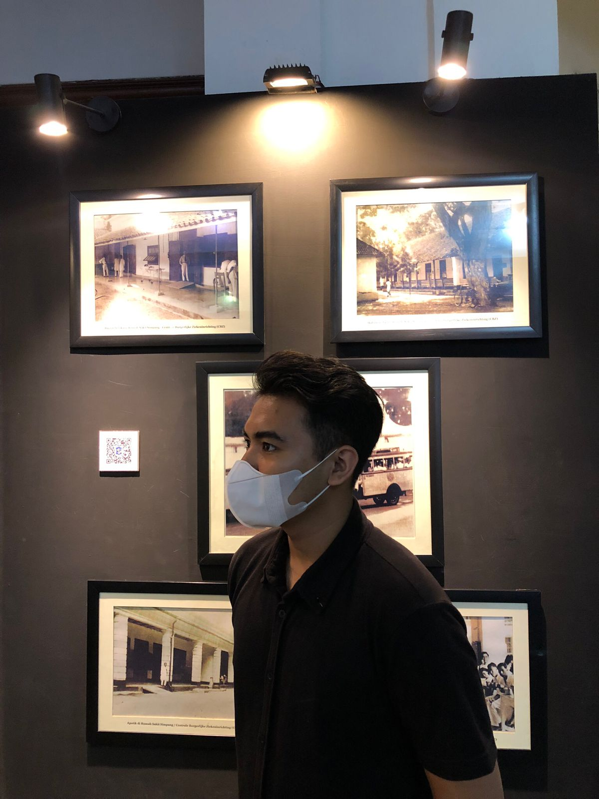
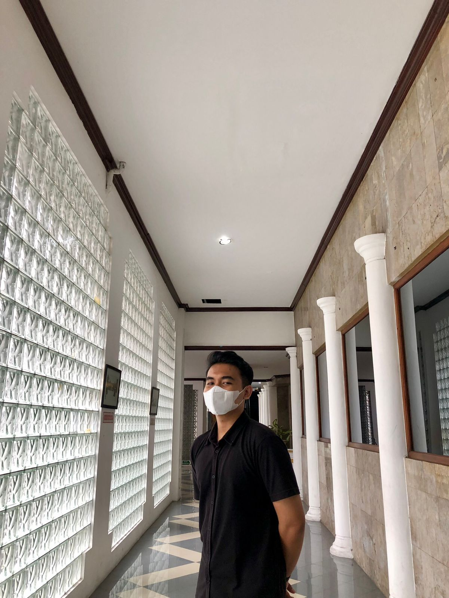
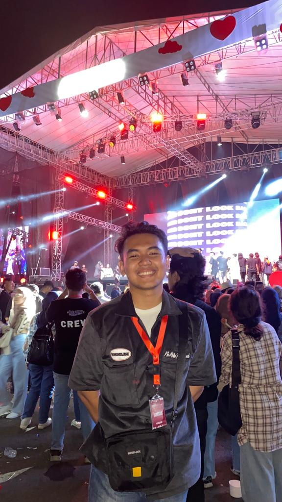
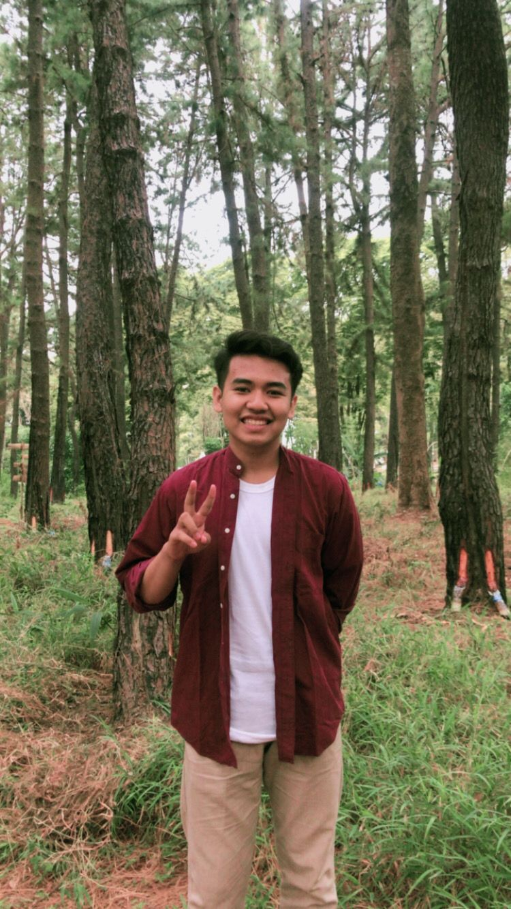
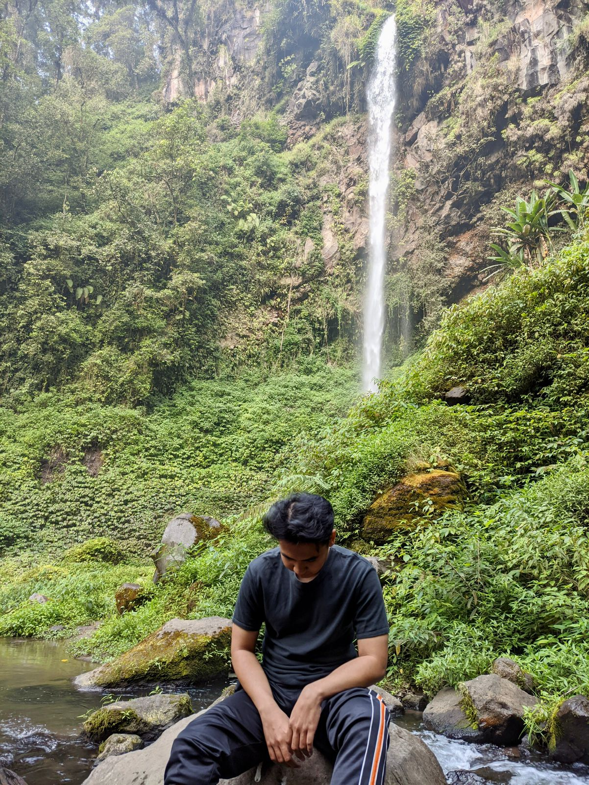
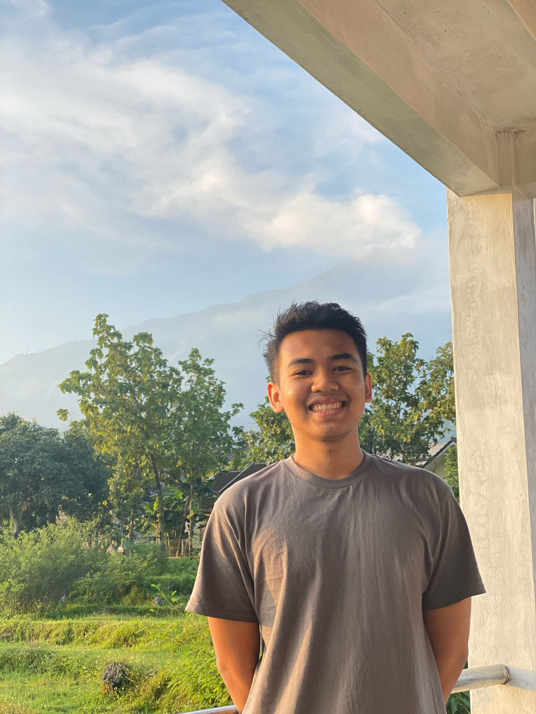
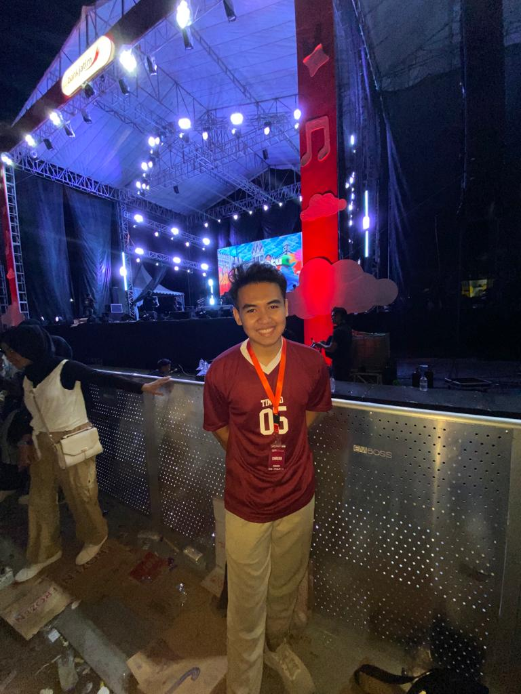
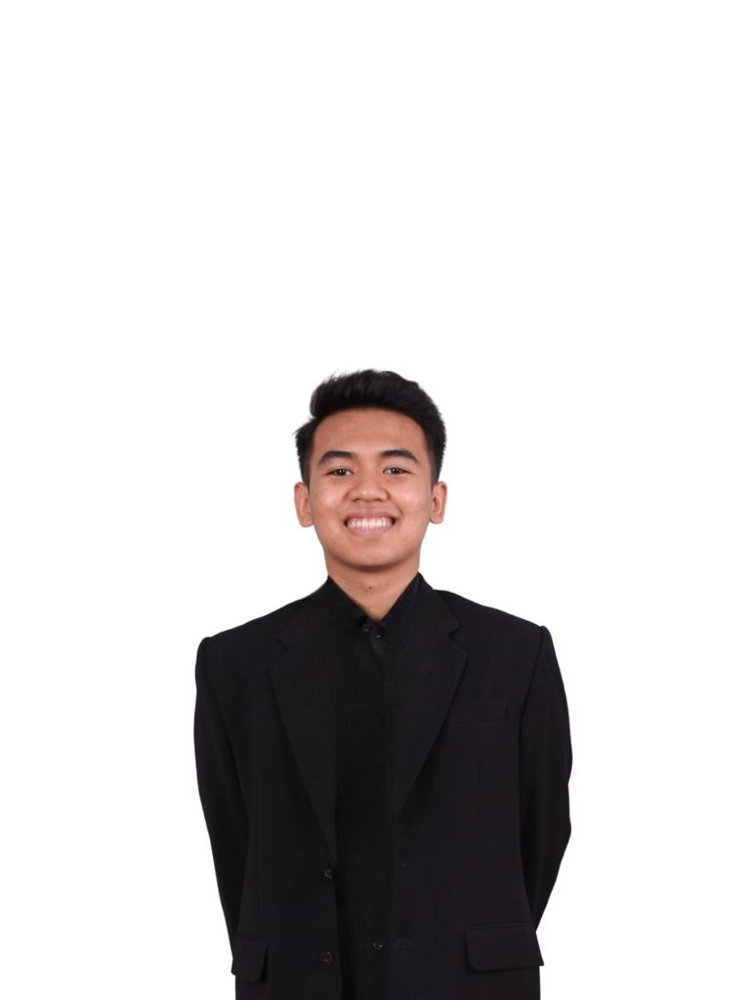

PENGALAMAN
Organisasi
OSIS SMA Negeri 2 Kota Mojokerto ( 2018 - 2020 )
Staff Bidang Sastra dan Budaya
- Menyusun dan melaksanakan kegiatan untuk pengembangan potensi siswa dan siswi SMA Negeri 2 Kota Mojokerto
- Berhasil melaksanakan semua program kerja dan berjalan dengan lancar
- Turut meningkatkan kreatifitas para siswa dan siswi khususnya di bidang sastra dan budaya
UKM Badminton UPN Veteran Jawa Timur ( 2023 - Saat Ini )
Staff Kominfo
- Menjaring dan menyalurkan informasi seputar badminton melalui sosial media
- Mengelola seluruh media dan informasi UKM Badminton UPN Veteran Jawa Timur
- Mendokumentasikan kegiatan organisasi
Volunteer
Sounds Of Downtown Vol.5 ( 2023 )
Staff Ticketing
Sounds of Downtown adalah salah satu konser musik terbesar di Jawa Timur, yang diadakan oleh SOD Group
- Melayani penukaran tiket penonton sebelum maupun saat pelaksanaan acara
- Memberikan bantuan kepada penonton jika ada kendala perihal tiket
- Bertanggung jawab atas scan in tiket penonton
- Mengatur flow masuk penonton ke venue agar tidak terjadi penumpukan
Company Expo ( 2023 )
Staff Humas
Seminar yang menghadirkan beberapa perusahaan atau startup untuk mahasiswa yang akan memasuki dunia kerja
- Menjadi narahubung untuk penawarkan partnership kepada beberapa perusahaan
- Menangani kebutuhan perizinan
- Menjadi Liaison Officer untuk 2 Moderator di seminar acara tersebut
PORSIMNAS WIMAYA ( 2022 )
Staff Kesekretariatan
Pekan Olahraga, Seni, dan Ilmiah Mahasiswa Nasional Widya Mwat Yasa adalah Kegiatan kolaborasi tiga UPN Veteran di Indonesia.
- Memberikan petunjuk kepada calon peserta lomba mengenai pendaftaran
- Bertanggung jawab atas penerimaan dan pengecekan berkas para peserta lomba
- Melayani registrasi pada saat hari pelaksanaan lomba
PKKMB Gama Abyakta ( 2022 )
Staff Acara
Program yang memperkenalkan kehidupan kampus kepada mahasiswa baru Fakultas Ekonomi dan Bisnis UPN Veteran Jawa Timur
- Membuat susunan acara secara rinci dan spesifik
- Mengkoordinir dan mengatur hal-hal teknis di lapangan saat acara berlangsung
- Melakukan sosialisasi susunan acara kepada berbagai pihak yang terkait dengan event tersebut, termasuk kepada anggota panitia
Skills and Interest
Hard Skill
| Microsoft Office |
| Canva |
| HTML |
| CSS |
| JavaScript |
Soft Skill
| Problem Solving |
| Critical Thinking |
| Time Management |
| Innovative |
| Responsible |
Interest
| Internship |
| Volunteer |
| Workshop |
| Games |
| Sport |
Gallery







